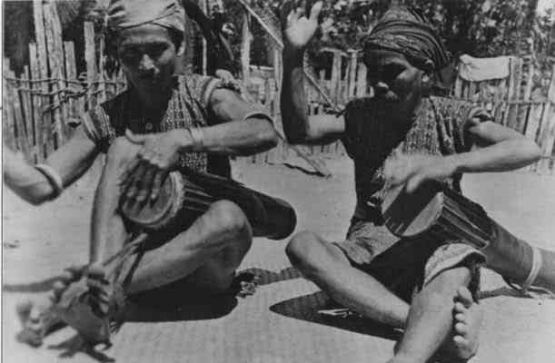
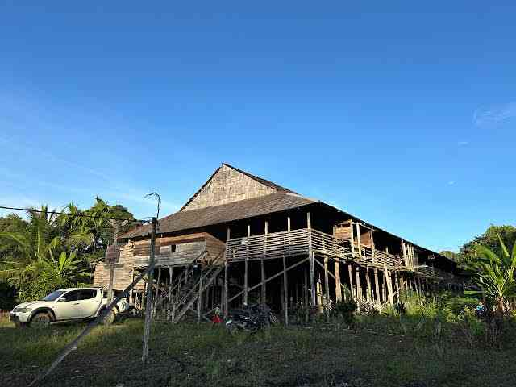
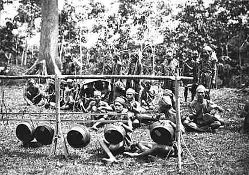
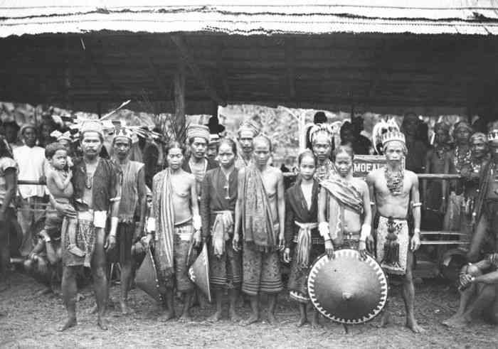

Galeri Foto Budaya dan Kehidupan Suku Dayak Mualang

Warga Dayak Mualang memainkan alat musik tradisional.

Rumah Panjang khas Dayak Mualang di Kalimantan Barat.

Permainan gong oleh warga dalam acara adat.

Upacara adat dan pakaian tradisional masyarakat Mualang.
×
Suku Dayak Mualang merupakan salah satu sub-suku Dayak dari rumpun Ibanic yang tinggal di wilayah Kalimantan Barat. Mereka terkenal dengan warisan budaya yang kuat, sistem pertanian tradisional, dan kehidupan bersama di rumah betang (rumah panjang).
Domisili utama masyarakat Dayak Mualang berada di Kabupaten Sekadau dan Kabupaten Sintang, Provinsi Kalimantan Barat, tepatnya di beberapa kecamatan berikut:
Kecamatan Belitang Hilir, Kabupaten Sekadau
Kecamatan Belitang, Kabupaten Sekadau
Kecamatan Belitang Hulu, Kabupaten Sekadau
Kecamatan Sekadau Hilir, Kabupaten Sekadau
Kecamatan Sepauk, Kabupaten Sintang dan sekitarnya
Mereka menjunjung tinggi nilai gotong royong, adat istiadat, dan penghormatan kepada leluhur. Sistem kepercayaan dan hukum adat masih aktif dalam kehidupan mereka hingga kini, termasuk dalam menyelesaikan persoalan sosial.
Ciri Fisik Suku Dayak Mualang
Menurut Prof. Lambut dari Universitas Lambung Mangkurat, secara rasial, manusia Dayak dapat dikelompokkan menjadi:
Dayak Mongoloid
Dayak Malayunoid
Dayak Autrolo-Melanosoid
Dayak Heteronoid
Salah satu ciri yang tampak pada orang Mualang adalah ciri fisik yang mongoloid, wajah bulat, kulit putih/kuning langsat, mata agak sipit, rambut lurus, ada juga yang ikal serta relatif tidak tinggi. Mereka juga dikenal dengan keramah-tamahannya, karena orang Mualang sangat mudah membaur dengan sub suku lain dan mudah bersosial.
Tokoh-Tokoh dan Orang-Orang Berpengaruh dari Suku Dayak Mualang
Mgr. Hieronymus Herculanus Bumbun, O.F.M. Cap. – Uskup Agung Emeritus Keuskupan Agung Pontianak.
Mgr. Dr. Valentinus Saeng, C.P. – Uskup Sanggau, ditunjuk 18 Juni 2022.
Simon Petrus, S.Sos., M.Si. – Bupati Sekadau (2005–2015).
Paulus Florus – Budayawan, penulis, pemerhati Credit Union Kalbar.
Drs. Milton Crosby, M.Si. – Bupati Sintang dua periode (2005–2015).
Guyau Temenggung Budi – Pemimpin kuno kelompok terakhir Dayak Mualang yang meninggalkan Tampun Juah, dikawal oleh pendekar legendaris Mualang.
Mualang – Tokoh pahlawan, Manok Sabong (manusia sakti) yang menjadi asal-usul nama Suku Dayak Mualang.
Tarian dan Warisan Budaya Dayak Mualang
Tarian Dayak Mualang
Tari Dayak Mualang / Ngajat Kayau – Tari perang khas Dayak Kalbar.
Tari Pingan Mualang – Tersebar di Belitang Ilek, Tengah, dan Hulu.
Tari Pdang / Ngajat Bebunoh – Ditemui di Belitang Ilek (Merbang dan sekitarnya) serta Belitang Hulu (Sebetung).
Ajat Temuai Datai / Nyamot Temuai – Tari penyambutan tamu adat, tersebar luas di Belitang Ilek, Tengah, Ulu dan sekitarnya.
Ngajat Lesong Mualang – Ditemukan di Belitang Tengah (Sp. 2).
Sanggar Seni
Sanggar Sengalang Burong – Berlokasi di Rumah Betang Letjen Sutoyo, Kalbar.
Sanggar Sengalang Menenank – Desa Merbang, Kec. Belitang Hilir, Kab. Sekadau.
Sanggar Ayak Menebing – Kecamatan Sui-Ayak, Kab. Sekadau.
Kelompok Kerajinan
Tenun Kumpang Ilong – Kec. Belitang Hulu.
Anyaman Tangoy, Ragak, Bubu, Takin – Tersebar di Menawai.
Situs dan Warisan Budaya
Rumah Panjai Sungai Antu – Belitang Hulu (rumah lama yang masih dihuni).
Rumah Panjai Temawang Rungkup – Empajak, Belitang Hilir.
Rumah Panjang di Kerintak
Lagu Daerah Dayak Mualang
Berikut beberapa lagu daerah khas yang populer di kalangan masyarakat Dayak Mualang:
Meh Bujang
De Kutak Katik
Aboh Beramay
Kepai-Kepai
Bejuged Ari Gawai
...dan masih banyak lagi
Legenda Asal Usul Suku Dayak Mualang
Sekitar lebih dari 2.000 tahun lalu, kehidupan masyarakat yang kini disebut Mualang sangat erat kaitannya dengan legenda asal usul mereka dari sebuah tempat yang disebut Temawai atau Temawang Tampun Juah.
Wilayah ini merupakan daerah yang subur yang terletak di hulu Sungai Sekayam, Kabupaten Sanggau Kapuas, tepatnya di hulu kampung Segomun, Kecamatan Noyan. Tempat ini dipercaya sebagai tanah leluhur dan menjadi titik awal perjalanan sejarah dan migrasi suku Mualang hingga tersebar di wilayah Kalimantan Barat seperti sekarang.